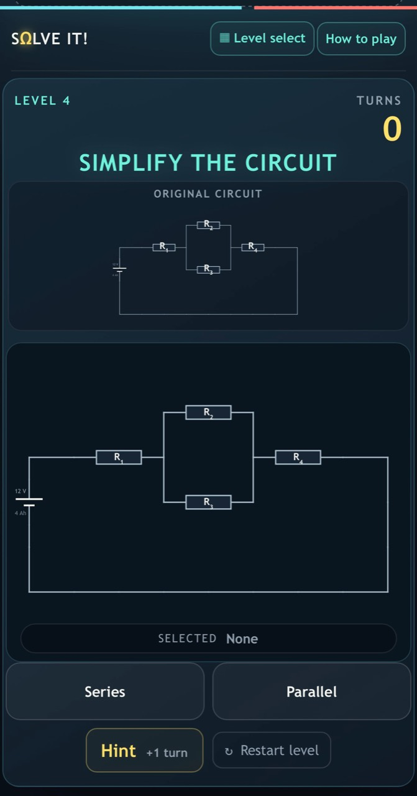
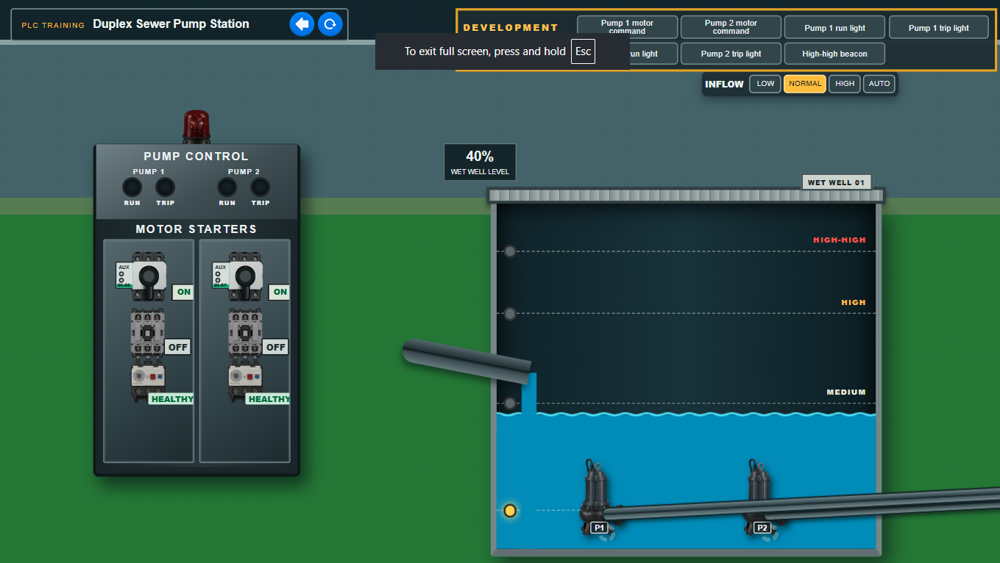
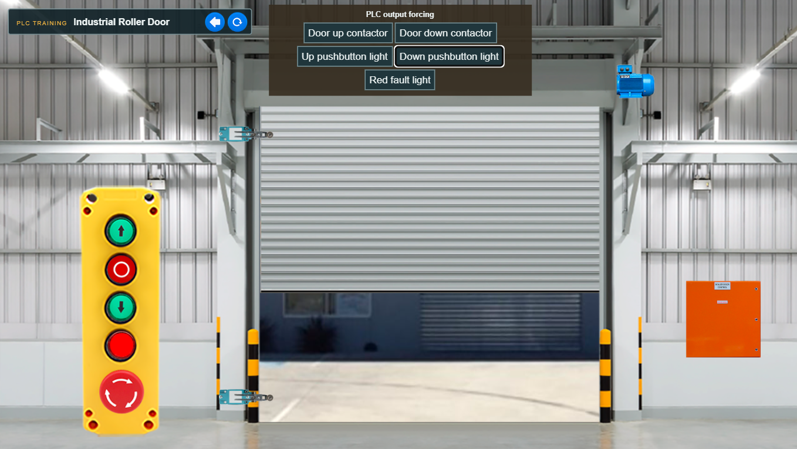

Fault Testing Boards
A physical training platform used by apprentices to complete mandatory electrical testing in a safe, simulated environment. The powered display records correct tests, incorrect attempts and missed faults.
Capability
Physical and simulated systems built for practising PLC control, electrical testing and fault-finding without relying on live plant.
A physical training platform used by apprentices to complete mandatory electrical testing in a safe, simulated environment. The powered display records correct tests, incorrect attempts and missed faults.

The rear assembly combines a Raspberry Pi, relay banks, power conversion and field wiring to introduce controlled faults and evaluate testing sequences.

A gamified training tool that teaches apprentice electricians to recognise and simplify single-path and multipath circuits.

A refrigeration scenario controlled by real industrial PLC hardware, allowing learners to test sequences, interlocks and fault responses without live machinery.

A duplex pump-station scenario for practising level control, duty and assist operation, protection and alarm handling using physical PLC hardware.

A roller-door scenario covering pushbutton control, travel limits, emergency stop, contactor interlocking and fault response using physical PLC hardware.